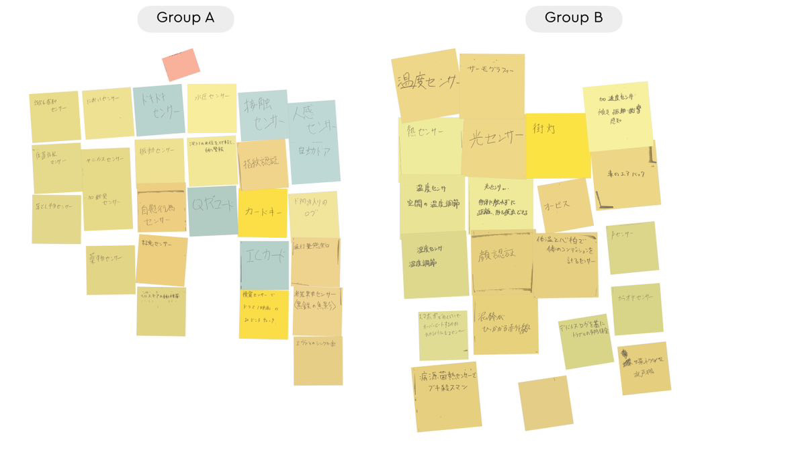
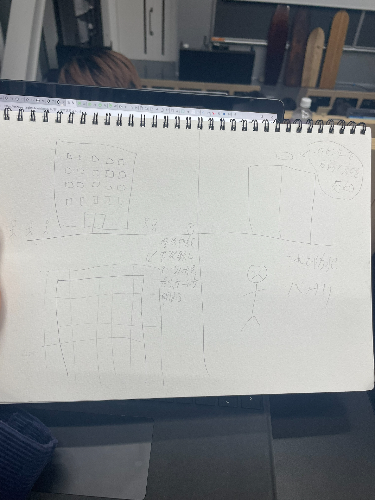

IoTを体験2
グループワークのポストイット

・温度センサーで空間の温度調節
・人感センサーの自動ドア
・速度センサーで安全運転装置など..
センサーでできそうな自分のアイディア

・都庁や大手企業など情報漏洩すると大変なことになるビルや部屋などの自動ドアに、顔と名前を検知するセンサーをつける（予め登録されている）。
顔や名前が一致しなかったり、登録されていない人物が通った瞬間にゲートが閉まる。